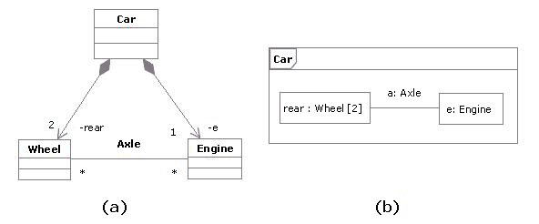
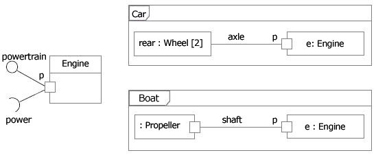
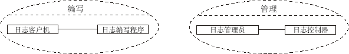
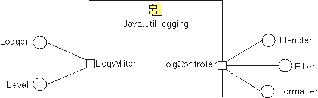
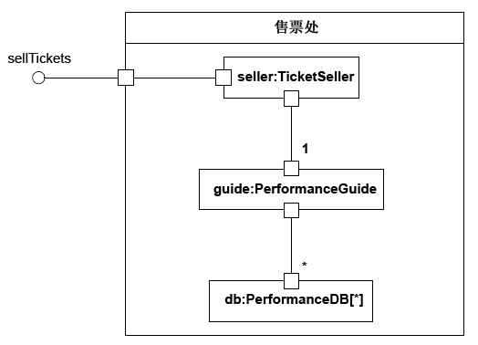

| 概念：结构化类 |
 |
|
| 相关元素 |
|---|
定义按照 UML（[UML04]），类是 EncapsulatedClassifier 和“元类”类的子类型，使类有能力具有内部结构和端口。此外，UML 将组件定义为类的子类型。因此，在 RUP 环境中，我们将组件和类均视为构造化类。 部件构造的类的实例包含对应每个部件的一个或一组对象。当包含的构造类实例被破坏时，所有这样的实例都被破坏。 以下示例显示了 Car 类的两个可能视图：
 示例：在构造的类中扮演角色的部件 连接器连接器是构造的类中两个部件之间的关系的实例。它是一个链接，以允许进行通信。连接器可由普通关联或瞬态关系实施，如过程参数、变量、全局值或其他机制。 为装配连接器和委托连接器指定了构造的类的内部“配线”：
端口端口是构造的类的结构特性。通过强制从构造的类的外部到遵守声明接口的端口的通信来增加封装，这为该构造的类的规范和相互连接增加了精确性。 端口需要和提供的接口指定了通过该交互点的交互必需的一切内容。如果通过端口实现构造的类与环境的所有交互，那么构造的类的内部与环境完全隔离。这使得这样一个构造的类可用于符合由端口指定的约束的任何环境。 不存在关于端口如何实施的假定。它可作为显式对象实施，或者只是未在实施中明确出现的虚拟概念。 下面提供了端口示例： 示例 1 由 Car 和 Boat 使用的 Engine 端口 上图显示了具有端口 p 和两个接口的类 Engine：
在端口 p 上，引擎类是完全封装的；在完全不了解引擎将嵌入的环境的情况下也可以指定它。只要环境遵守引擎的提供和需要的接口所指出的约束，引擎就将正确运行。
只要引擎和链接到其端口 p 的部件之间的交互遵循约束（由提供的和需要的接口指定），引擎就将按指定运行，无论它是汽车引擎还是船引擎。 而且，即使 Engine 具有其他声明的端口，如用于 Fuel Consumption 的端口 f，汽车的车轮和船的螺旋桨仍将通过端口 p 访问 Engine。端口 f 将是燃料表所感兴趣的，不管使用的燃料类型以及汽车和船可能具有的燃料表类型如何。 示例 2此端口示例是基于 Java Logging API（[JAV03]）的，后者是提供 Java 2 平台的核心日志记录工具的以下类和接口的包，其中：
那些类和接口在两种重要类型的协作中牵涉到。某些类和接口用于写入日志，而其他类和接口用于管理日志。下图显示了客户和管理员使用日志的两种不同协作，建模成 UML 协作：
 客户和管理员使用日志的不同协作 对日志记录服务及其协作建模的一种可能的 UML 2.0 表示将使用具有端口和声明接口的组件，如下图所示：  作为组件实施的 Java 日志记录 API 包，提供分组到端口中的接口 在 Java 日志记录 API 规范中，一部分日志记录服务被作为类实施，而其他日志记录服务作为接口实现。在此示例中，我们将每个这些服务作为提供的接口建模，这可在组件内部由部件实现。上面提到的与写和管理协作相关的、两个不同种类的行为可用逻辑上分组到端口中的接口来表示。因此，我们将：
此建模备选方案通过在逻辑上将接口分组到不同端口中而分离了问题。我们为组件规范和它与外部世界的相互连接提供了额外的精确性。 建模在设计期间，类和组件可分解成相连接的部件的集合（可依次进一步分解）。 组合结构图可用于显示构造的类的分解。 作为示例，下图显示了售票系统中票房的组合结构图。此类分解成三个部件：
每个部件通过由各自的端口指定的、定义良好的接口来进行交互。整个票房通过端口与外界交互。此端口上的消息被分派到票销售员类，但票房类的内部结构对于外部客户是不可见的。  示例：售票系统的组合结构图。 UML1.x 表示法请注意，构造的类在 UML 2.0 中是一个新概念。 RUP 定义的很多封装体可使用结构化类来表示（有关该主题的更多信息，请参阅 工作产品：封装体和 工作产品指南：封装体）。 工作产品：封装体和 工作产品指南：封装体）。
如果您的工具只支持 UML 1.5，在
关于更多信息，请参阅UML 1.x 和 UML 2.0 之间的区别。 |
© Copyright IBM Corp. 1987, 2006. All Rights Reserved. |